BlogPost-09 – Semantic Loss: A Logic-Based Loss Function
Group 9 – Raelyn Henderson & Xiang Zhang
1. Brief Summary
This paper introduces Semantic Loss, a logic-based loss function that allows deep neural networks
to respect symbolic constraints during training. Instead of learning only from labeled data, the
model is also guided by a logical formula that defines which output configurations are valid. Semantic Loss
is defined as the negative log-probability that the network’s prediction satisfies that formula.
This makes it possible to enforce rules such as “exactly one label must be true,” “the path must be
continuous,” or “rankings must be transitive,” without changing the network architecture. The authors show
that adding Semantic Loss improves performance on semi-supervised classification, structured path prediction,
and ranking tasks. Overall, the work demonstrates a principled way to combine symbolic reasoning with
deep learning by treating logic as a differentiable regularizer.
2. Slide Descriptions
Below, each slide from our presentation is shown with its screenshot and a short explanation describing
its main idea and how it fits into the overall story of the paper.
Slide 1 — Title Slide
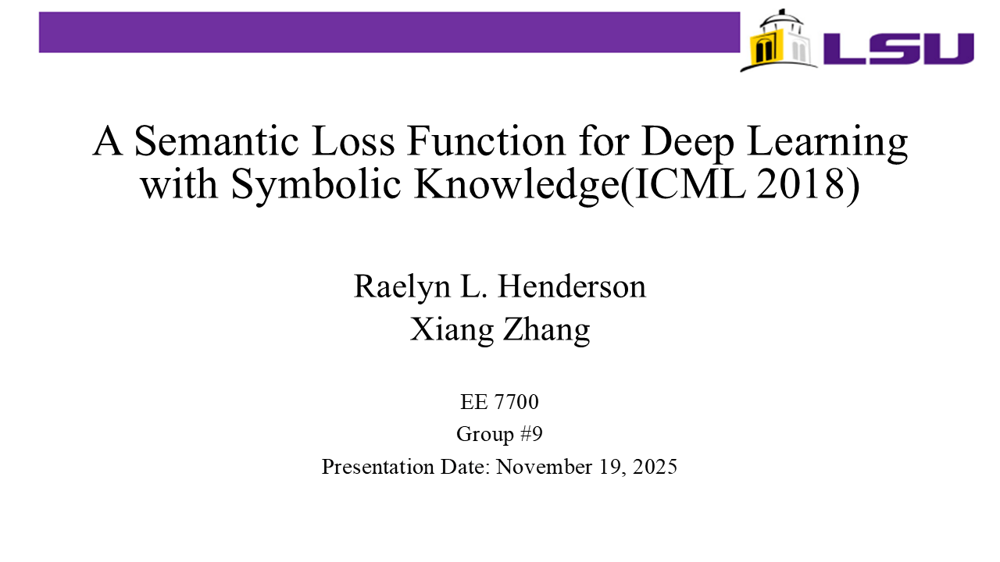
This slide introduces the paper "Semantic Loss: A New Logically Consistent Loss Function for Deep Learning"
and establishes the context for our presentation. It includes our group information (Raelyn Henderson & Xiang Zhang),
the course, and the authors of the paper. The slide sets the stage by signaling that the presentation will examine how
logical constraints can be integrated directly into neural network training through a novel loss function called
Semantic Loss. It prepares the audience for an analysis that blends symbolic logic and deep learning.
Slide 2 — Overview of Presentation
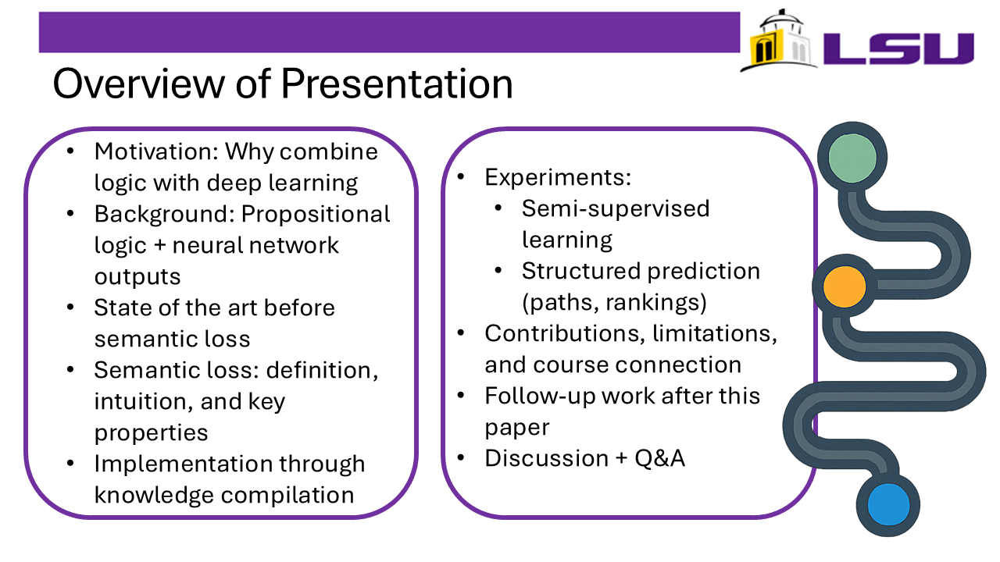
This slide provides a structured roadmap of the entire presentation. It highlights the topics we will cover including:
the motivation for Semantic Loss, the background in logical constraints, the limitations of prior methods, the
definition and formulation of Semantic Loss, and results from experiments. It also previews contributions, limitations,
follow-up works, teamwork, and discussion topics. This roadmap ensures the audience understands the flow and can
follow the talk from foundational ideas to experimental evaluation and broader significance.
Slide 3 — Motivation
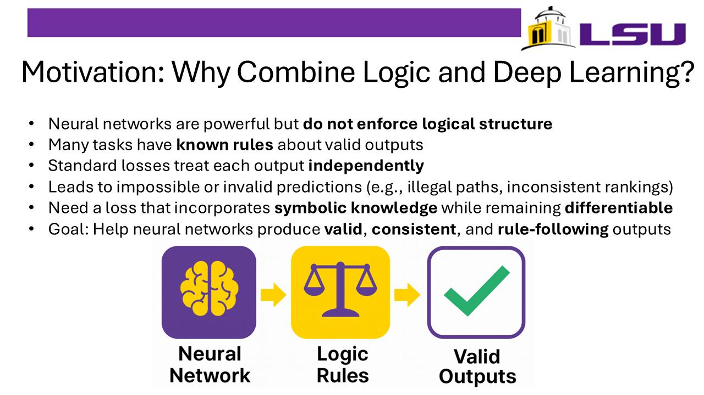
This slide explains why Semantic Loss is needed in the first place. Neural networks typically treat output units
independently, which often leads to invalid predictions—such as outputting multiple labels for a single-class
task or generating inconsistent structures in ranking and path prediction problems. Many real-world tasks come with
clear logical rules, yet standard networks cannot automatically enforce them. This slide motivates the need for a
principled way to inject logical constraints into model training in a differentiable manner. Semantic Loss solves
this problem by encouraging outputs that satisfy known rules.
Slide 4 — Background: Propositional Logic
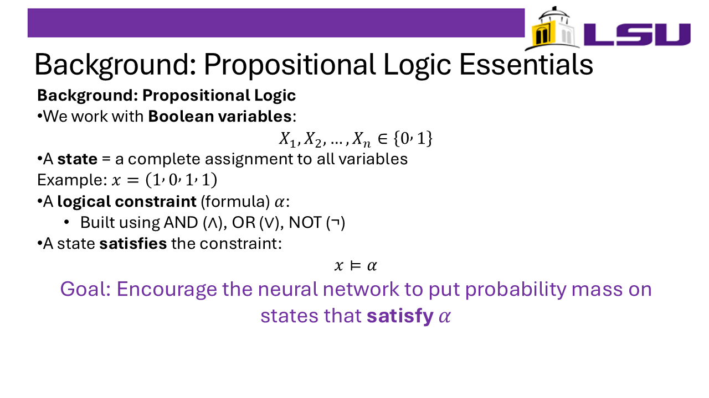
This slide introduces essential propositional logic concepts that Semantic Loss relies on. It explains logical
variables, truth assignments, satisfiability, and how constraints can be represented as formulas. These fundamentals
are important because Semantic Loss works by evaluating the network’s predicted probability distribution over all
assignments that satisfy a given logical formula. This slide ensures that even those unfamiliar with logic can
understand the later technical material.
Slide 5 — Neural Network Output as a Distribution
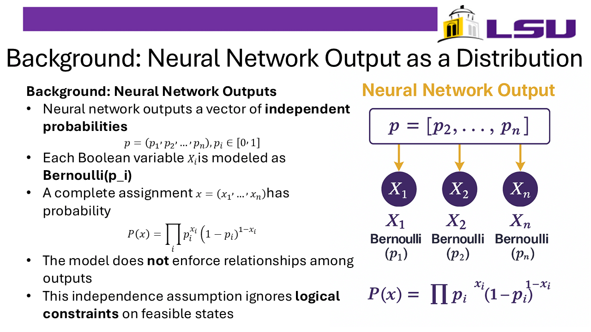
This slide explains how neural networks output probability distributions through softmax or independent sigmoid units.
Semantic Loss uses these probabilities to measure how much probability mass the model assigns to outputs that satisfy
the constraint. This slide emphasizes that even though neural networks do not reason logically, their probabilistic
outputs can still be evaluated against logical rules, making them suitable for integrating symbolic constraints.
Slide 6 — Limitations of Prior Approaches

This slide reviews existing attempts to combine logic with neural networks, such as rule-based regularizers, fuzzy
logic penalties, and probabilistic reasoning frameworks. Each has limitations—such as depending on syntax rather than
semantics, lacking differentiability, or failing to provide a consistent way to measure whether the logical constraints
are satisfied. The slide shows why a new approach is needed: one that is mathematically principled, differentiable,
and applicable across architectures. This deficiency motivates the creation of Semantic Loss.
Slide 7 — The Core Problem
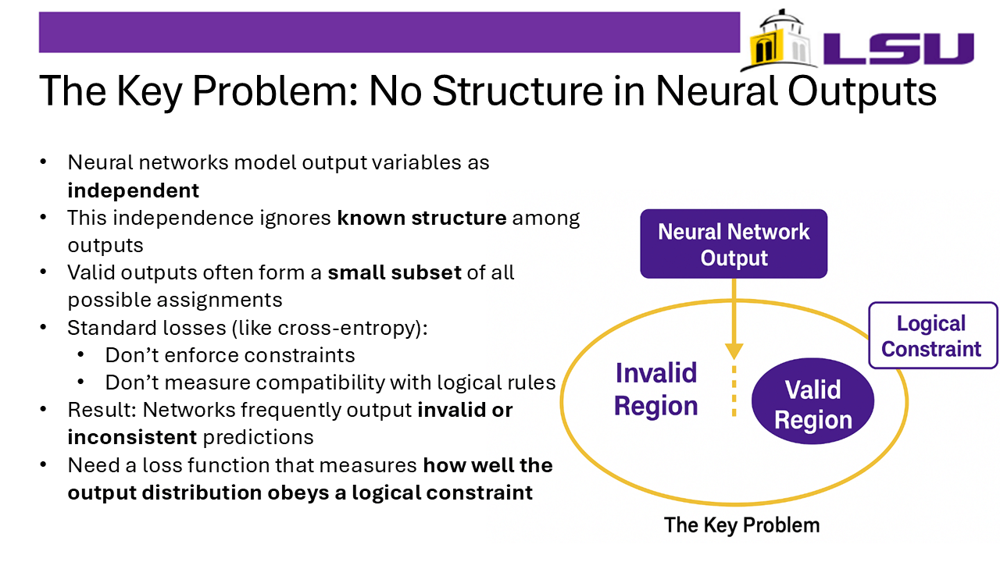
This slide identifies the main challenge addressed by Semantic Loss: neural networks make independent predictions that
ignore global structure. For tasks requiring “exactly one” choices, transitive rankings, or valid paths in graphs,
these independent outputs violate constraints and produce impossible or meaningless outputs. The slide uses examples
to illustrate how neural networks can predict illegal configurations without proper guidance. This problem is the
heart of why Semantic Loss is needed.
Slide 8 — Introducing Semantic Loss
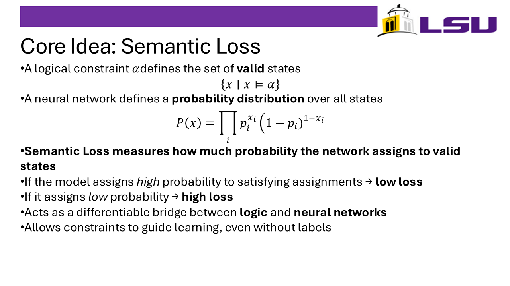
This slide formally introduces Semantic Loss as a differentiable function that penalizes violations of logical
constraints. Unlike heuristic penalties, Semantic Loss evaluates the true semantic meaning of a logical formula
by computing the probability that the model’s prediction satisfies the constraint. This provides a principled way to
inject symbolic knowledge into neural network training, improving structure and consistency in model outputs.
Slide 9 — Formal Definition of Semantic Loss

This slide presents the mathematical definition of Semantic Loss: the negative log of the total probability mass
assigned to all satisfying assignments of a logical formula. It explains that the loss becomes small when the network
assigns high probability to correct, structure-respecting outputs. This slide is crucial because it connects the
conceptual motivation to a practical, implementable objective.
Slide 10 — Axioms Behind Semantic Loss
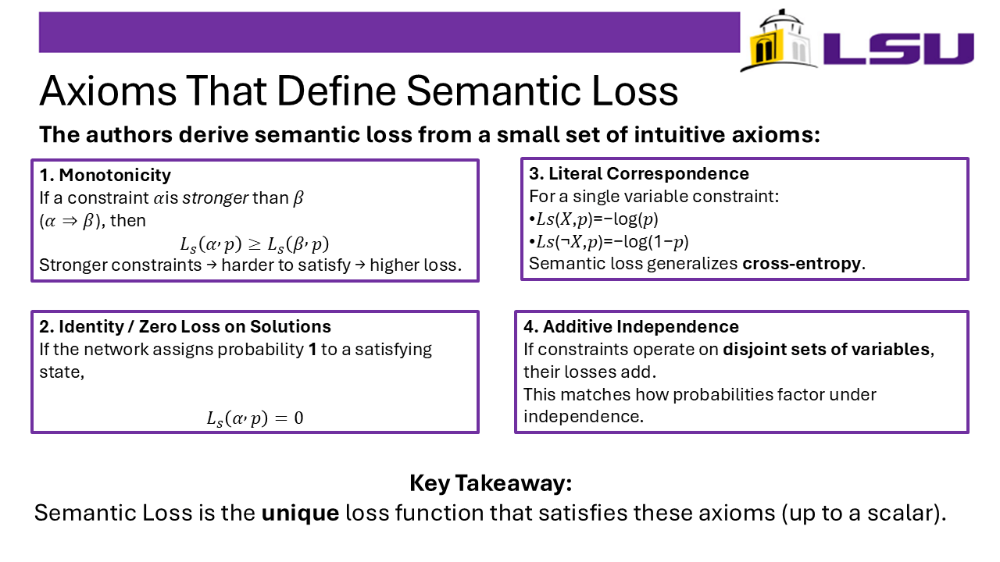
This slide explains the theoretical foundation behind Semantic Loss. The authors propose intuitive axioms such as
monotonicity, certainty, and invariance under logically equivalent transformations. These axioms uniquely determine
the form of Semantic Loss, proving it is the only function satisfying these desired logical properties. This gives the
method strong theoretical justification.
Slide 11 — Literal Correspondence
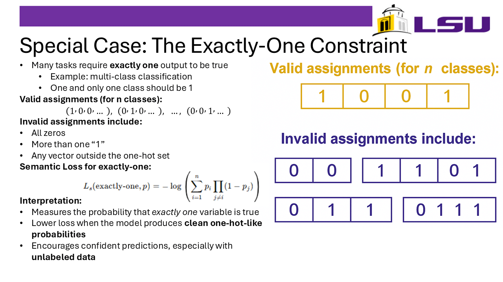
This slide shows that Semantic Loss reduces to cross-entropy when the constraint is simply “X = 1” (a single literal).
This demonstrates that Semantic Loss is not a replacement for traditional supervised learning but a generalization of
it. It connects the new method directly to classical machine learning, showing that Semantic Loss naturally extends
existing tools.
Slide 12 — Exactly-One Constraint
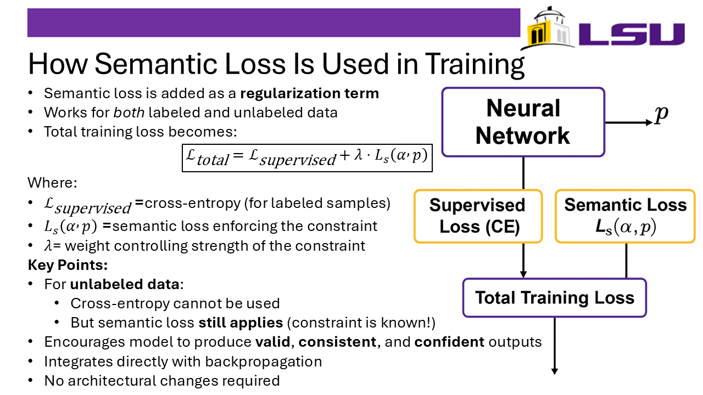
This slide illustrates how Semantic Loss enforces one-hot behavior for classification without requiring labels. The
constraint ensures that only one output should be true. The slide provides intuition by showing valid and invalid
assignments and explains how Semantic Loss encourages the model to produce structured, valid predictions that respect
mutually exclusive classes.
Slide 13 — Implementation via Knowledge Compilation
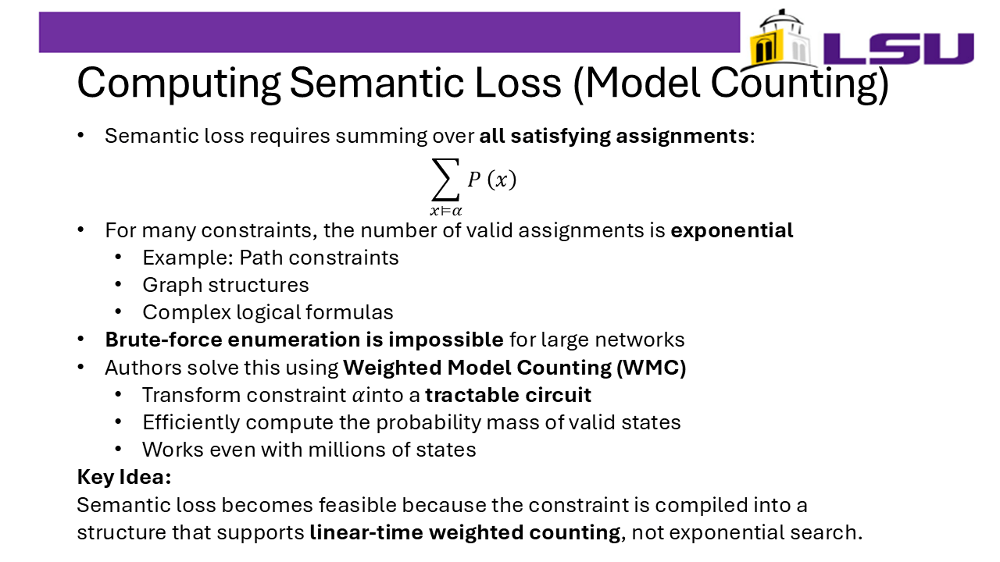
This slide discusses the computational challenge of Semantic Loss: evaluating the probability of satisfying assignments
can be exponential in the number of variables. The authors solve this by using knowledge compilation into tractable
circuits like Sentential Decision Diagrams (SDDs). These circuits make it efficient to compute weighted model counts,
enabling Semantic Loss to be used in practical deep learning systems.
Slide 14 — Experiment 1: Semi-Supervised MNIST
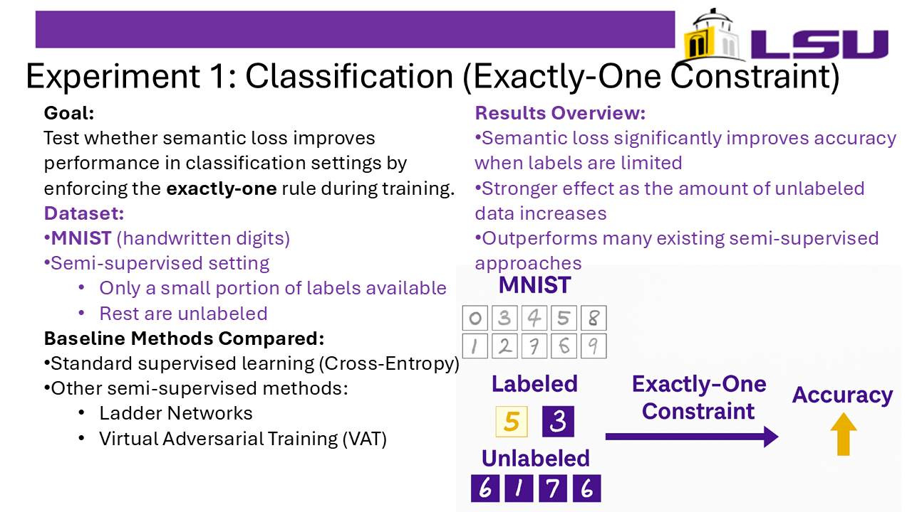
This slide presents the first experiment in the paper involving MNIST classification under limited labels. Semantic
Loss imposes the “exactly one label” constraint on unlabeled data, enabling the model to use logical structure to
compensate for the lack of supervision. The results show improved accuracy and better-calibrated softmax outputs
compared to baseline semi-supervised methods.
Slide 15 — Experiment 2: Path Constraints
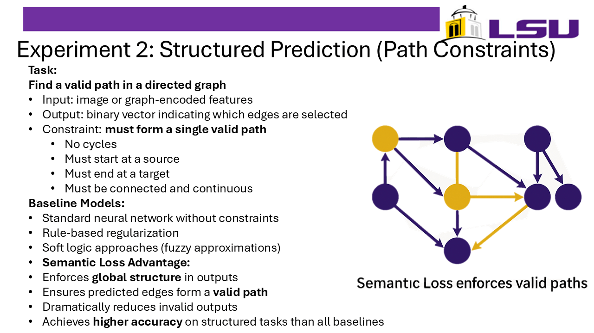
This slide summarizes the structured prediction experiment where the network must output a valid path in a directed
graph. Without Semantic Loss, the model frequently predicts disconnected or invalid paths. With Semantic Loss, the
model learns to respect structural requirements such as continuity, no branching, and valid start and end points. This
experiment demonstrates the advantage of embedding logical constraints.
Slide 16 — Experiment 3: Ranking
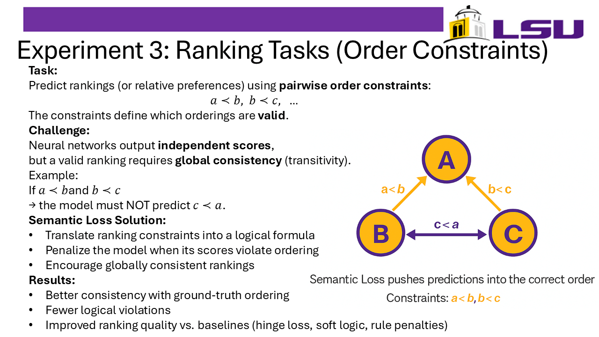
This slide covers experiments involving ranking tasks, where outputs must satisfy transitivity (if A < B and B < C,
then A < C). Neural network outputs often violate these relationships. Semantic Loss significantly reduces inconsistent
rankings by enforcing ordering constraints directly during training, showing its effectiveness for structured output
learning beyond classification.
Slide 17 — Summary of Experimental Results
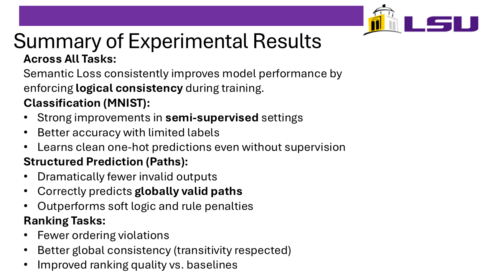
This slide consolidates the findings across all three experiments. It highlights that Semantic Loss improves
performance, increases output validity, and offers consistent benefits across different tasks—classification, graph
paths, and ranking. The slide reinforces that the method is versatile and applies to a range of structured output
scenarios.
Slide 18 — Main Contributions
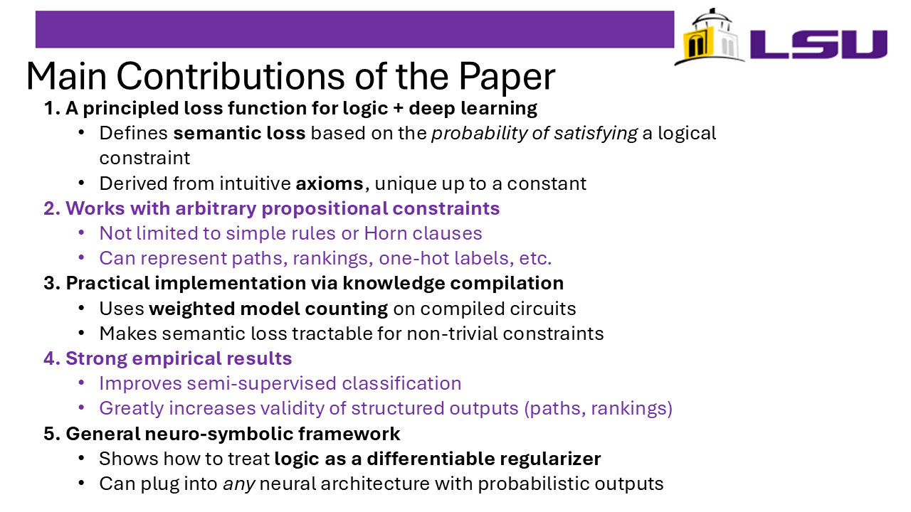
This slide outlines the major contributions of the paper: the introduction of Semantic Loss, a general framework for
enforcing logical constraints, a set of foundational axioms, an efficient implementation via knowledge compilation,
and comprehensive experiments showing the method’s effectiveness. It highlights the paper’s role in bridging symbolic
reasoning and deep learning.
Slide 19 — Limitations
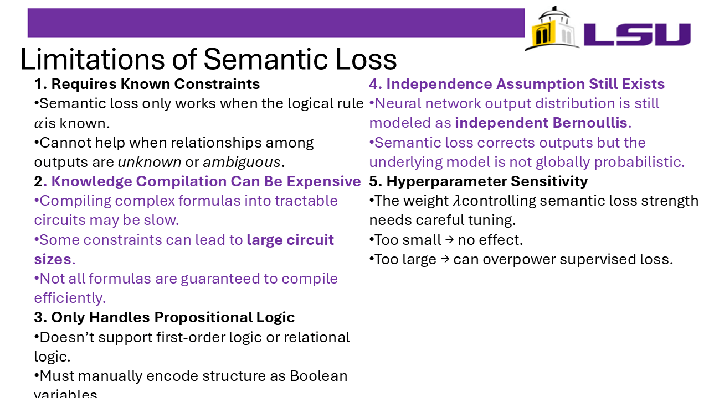
This slide discusses the limitations of Semantic Loss. These include computational complexity for large formulas,
reliance on propositional logic (limiting expressiveness), and the need to compile constraints into tractable circuits.
It also mentions challenges with scaling to very large tasks or highly complex structures. These limitations create
opportunities for future research.
Slide 20 — Connection to the Course
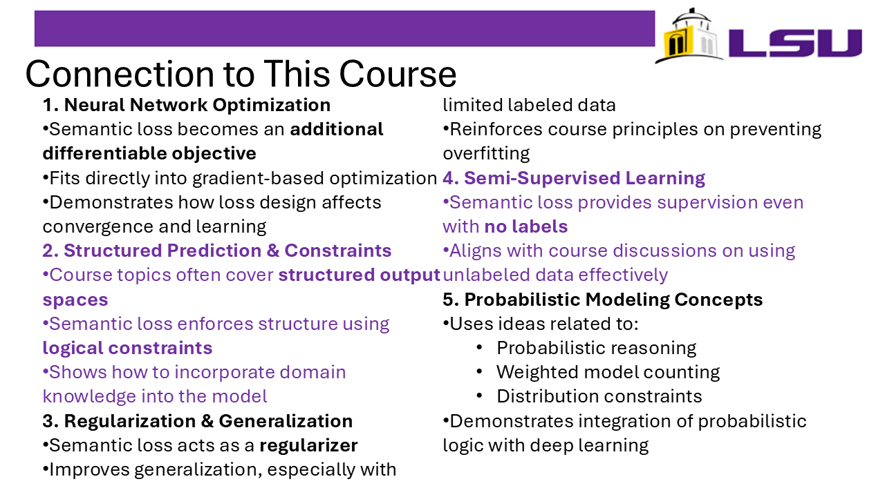
This slide explains how Semantic Loss connects to key course topics such as regularization, optimization,
semi-supervised learning, probabilistic modeling, structured prediction, and hybrid AI systems. It shows how this
paper integrates into the broader themes of the class by combining symbolic constraints with neural network training.
Slide 21 — Follow-Up Work
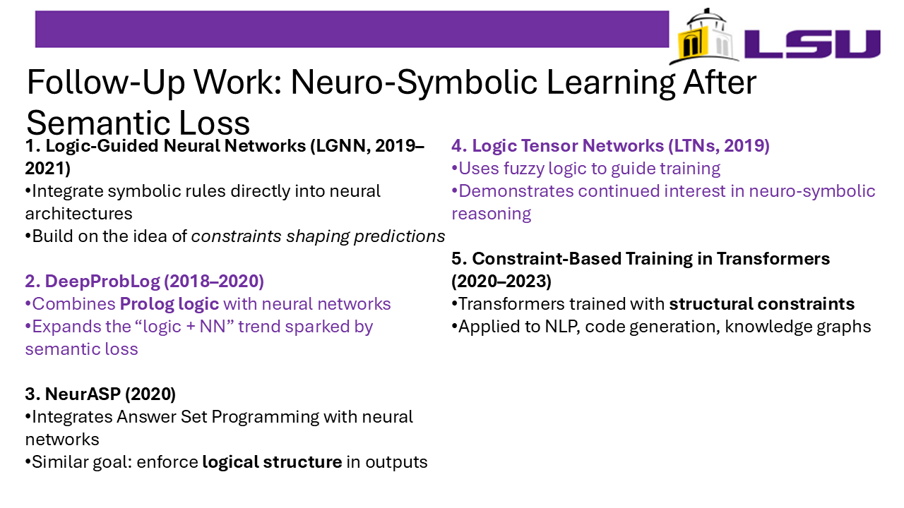
This slide highlights several follow-up works inspired by Semantic Loss. These include logic-guided neural networks,
probabilistic programming hybrids like DeepProbLog, neuro-symbolic frameworks such as NeurASP, and constraint-aware
transformer models. These works build on the idea of enforcing logic directly in neural computations, demonstrating
the impact of this paper on the broader research community.
Slide 22 — Discussion Questions
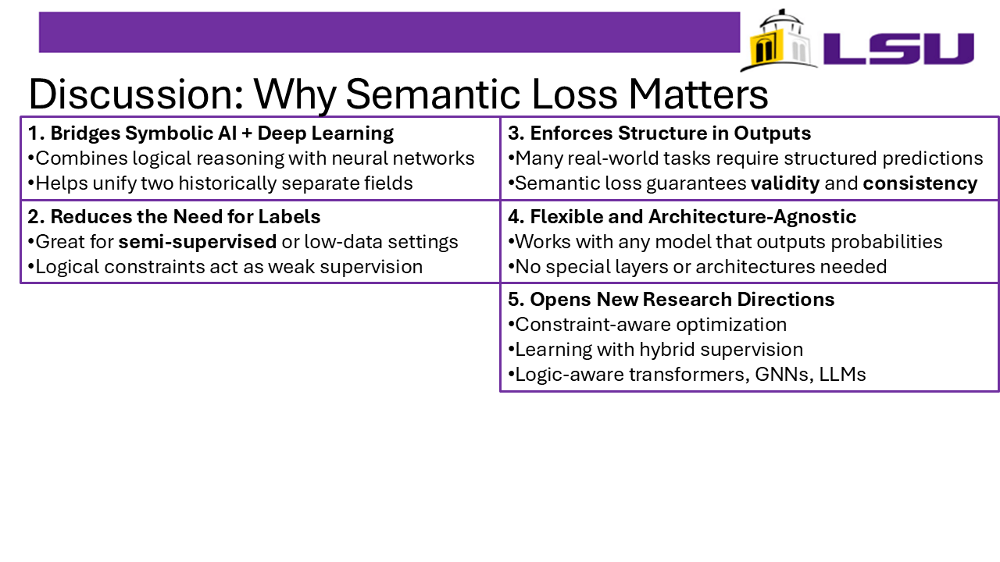
This slide presents thought-provoking questions intended to spark class discussion. Examples include: Why does Semantic
Loss improve performance? When is logic preferable to labels? How scalable is this method? Can Semantic Loss be applied
to large modern architectures? These questions help connect theory to practical considerations in machine learning.
Slide 23 — Discussion Questions
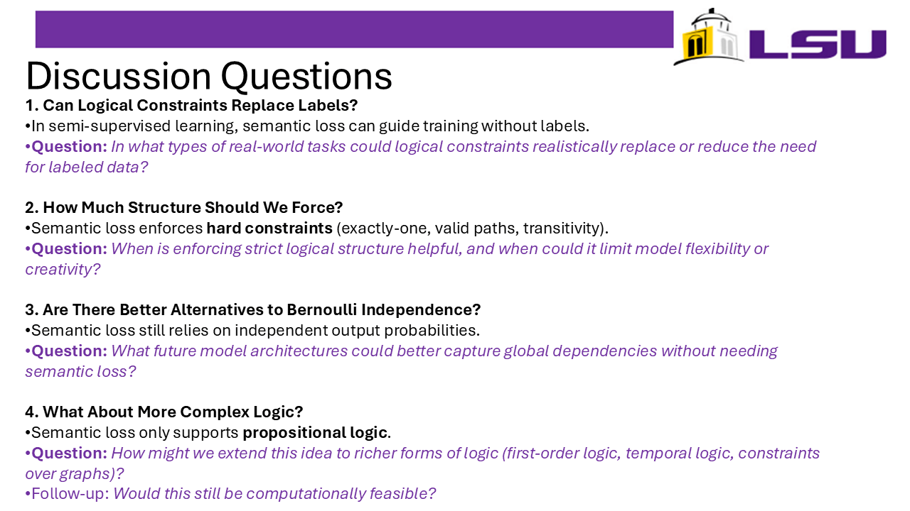
These were the discussion questions that the group had to discuss. This was our group.
Slide 24 — Teamwork Breakdown
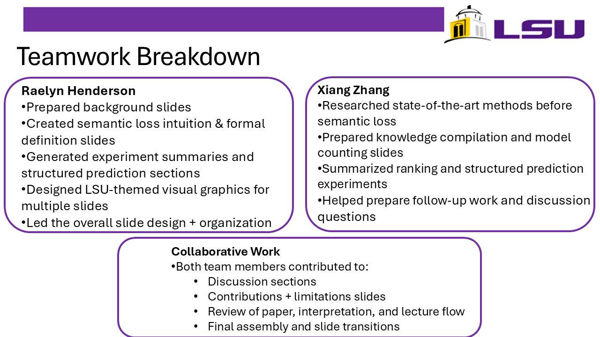
This slide describes the division of labor between the two group members. It outlines who contributed to summarizing
the paper, designing the slides, generating images, analyzing experiments, writing discussion questions, and preparing
the presentation. This transparency ensures clarity and meets the assignment's requirements for documenting teamwork.
Slide 25 — Q&A
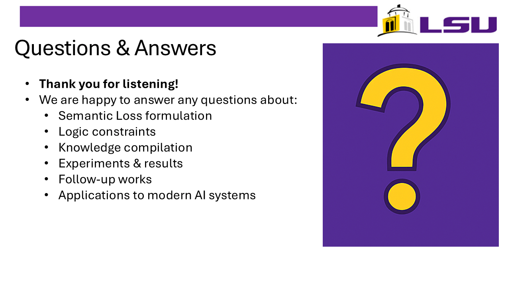
The final slide invites questions from the audience. It signals the formal end of the presentation and serves as a
transition into the discussion portion of the session, allowing classmates and instructors to ask about semantic
loss, experiments, limitations, or broader implications for deep learning.
3. Summary of Discussion Ideas
During class discussion, different groups shared their thoughts on when and how Semantic Loss would be
most useful. One recurring idea was that Semantic Loss is especially helpful in low-label or
semi-supervised settings, where logical constraints can act like extra supervision without
requiring more annotated data. Several groups mentioned practical application areas such as
medical diagnosis, routing and scheduling, and safety-critical systems, where rules are
well-defined and violating them can be costly.
At the same time, some groups raised concerns about scalability. Since Semantic Loss depends on
knowledge compilation and model counting, it may become difficult to use for very large constraint sets
or highly complex structures. There were also questions about how this approach compares to more recent
techniques, such as constraint decoding for large language models or reinforcement learning with
constraints. Overall, the discussion concluded that Semantic Loss is an important early step in
bridging symbolic reasoning and deep learning, but future work is needed to handle richer logics,
larger architectures, and real-world-scale problems.